Scope World · Entrega 1 · el universo
Pliego.
Un pliego de papel sobre la mesa de Álvaro, bajo su lámpara. Lo que aún no existe es de papel. La luz sostenida lo cuece en porcelana. Scope, la primera pieza cocida, vive allí.
pendiente de aprobación · renders de Blender con el modelo aprobado de Scope, sin modificar · interfaz en HTML real · sin cambios en producción
Las leyes del mundo 02-biblia.md §1
El mundo 12.1 · render principal
Amanecer en el margen. Scope observa cómo empieza a levantarse una hoja nueva, la pregunta que aún no está escrita. Detrás está el campo de preguntas de Álvaro, a lápiz y unidas por su hilo rojo. Al fondo, la lámpara (el sol de este mundo) y el resplandor de lo que ya se ha cocido.
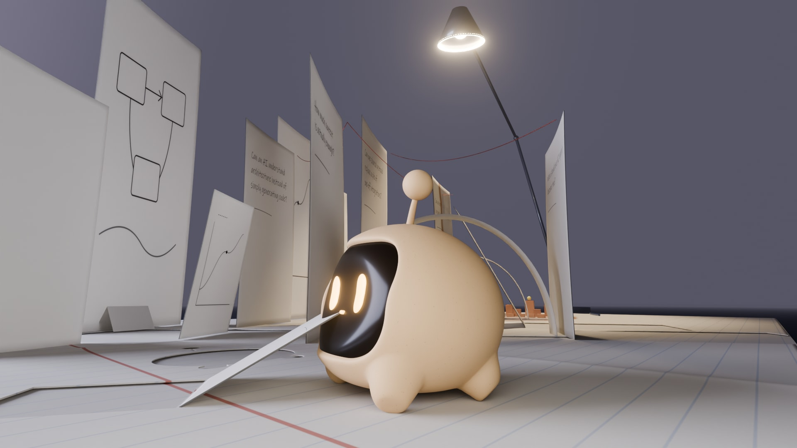
La primera pantalla 12.2 · home · 12.8 · móvil
El mundo lo da Blender y la interfaz es HTML real, con las tipografías del sitio (Geist, Geist Mono y Newsreader) y textos verdaderos. El nombre se apoya en el papel pautado, como impreso en la hoja. La navegación es a la vez el mapa: cada sección nombra su lugar y la ruta marca dónde estás. En móvil la cámara es otra: Scope más abajo, el texto en el cielo y la navegación al alcance del pulgar.
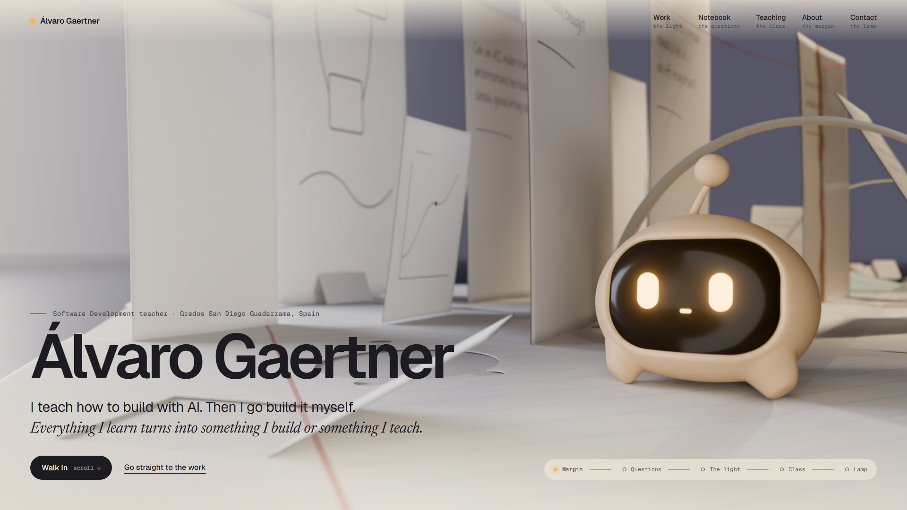

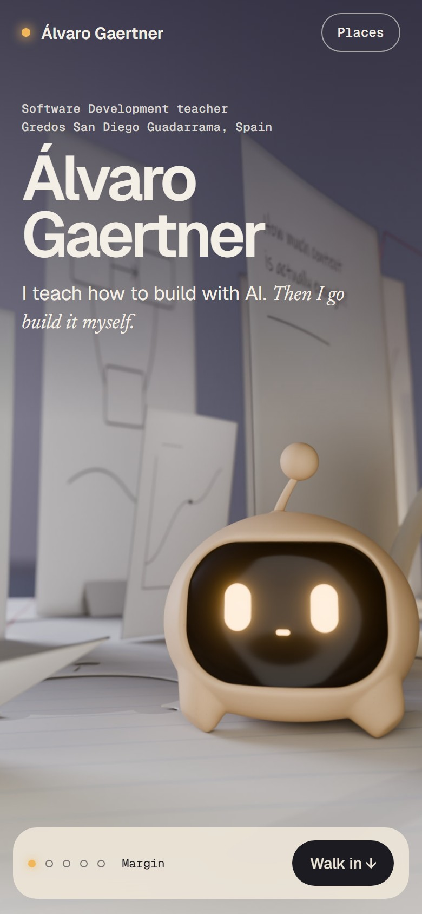

Un solo mundo 12.3 · mapa
El mapa es el propio mundo visto desde arriba (render ortográfico), sin dibujo aparte. Hay seis lugares en una hoja y un camino en S desde el margen hasta la luz. El círculo cocido se reconoce incluso sin Scope.
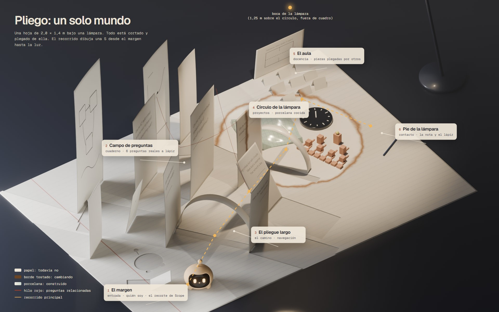
pliego.py --project 1) · render sin etiquetasUn día en el pliego 12.4 · storyboard · 03-storyboard.md
01 final · 02–09 vista previa 640 px el render final (1280 px · 64 muestras) de 02–09 quedó interrumpido: el sistema detuvo la cola por falta de memoria. Las composiciones son las definitivas; falta la resolución.
Nueve fotogramas: un mismo día y una misma hoja, cada uno consecuencia del anterior. La luz cuenta la hora; el contenido avanza de pregunta a pieza, a patrón y a conversación.
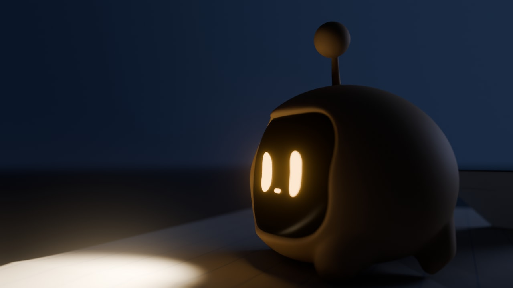
01 · nocheAntes de que llegues
Scope recorre el margen y lee la pauta con la luz de sus ojos. Es el loader.
clip Focus.L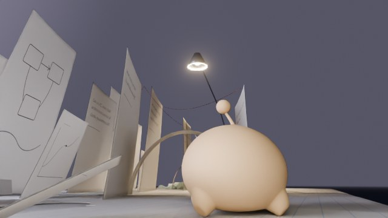
02 · amanecerSe enciende la lámpara
Llegas tú. La lámpara se enciende al fondo y Scope levanta la mirada. Home.
pose nueva (LookUp)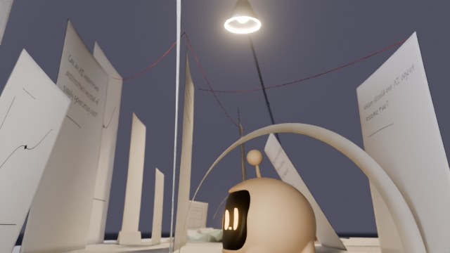
03 · mañanaUna pregunta
Bajo el arco, ante «How much context is actually enough?». Cuaderno.
clip Focus.L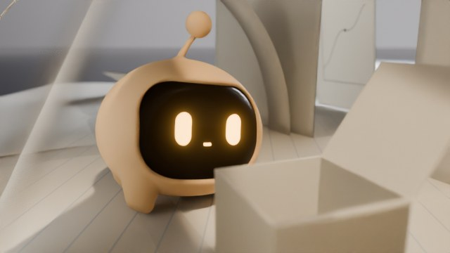
04 · díaAlgo madura
Una hoja se ha plegado en una forma con la tapa abierta. Scope ladea la cabeza.
clip Tilt.L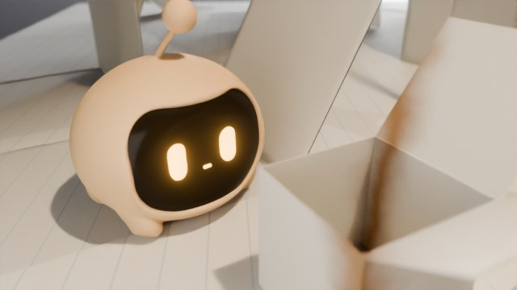
05 · díaEl borde
La forma llega a la luz: la línea tostada la cruza y una mitad empieza a cocerse.
clip Focus.R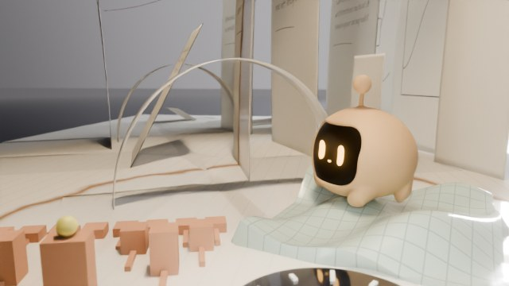
06 · díaLo construido
Scope sobre la porcelana de MathView, mirando el bracket de Tournamently. Proyectos.
pose sostenida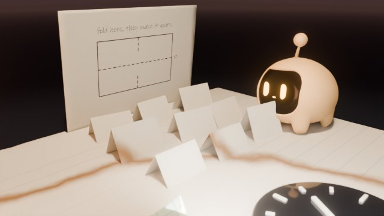
07 · atardecerEl aula
Piezas plegadas por otros desde un mismo patrón. Scope ladea la cabeza ante una torcida.
clip Tilt.R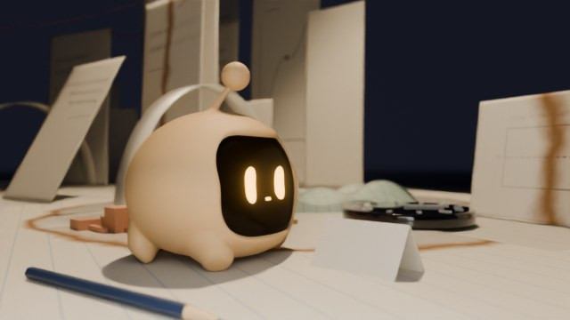
08 · lámparaUna nota en blanco
Al pie de la lámpara, una nota plegada y el lápiz. Escribes tú. Contacto.
clip Focus.R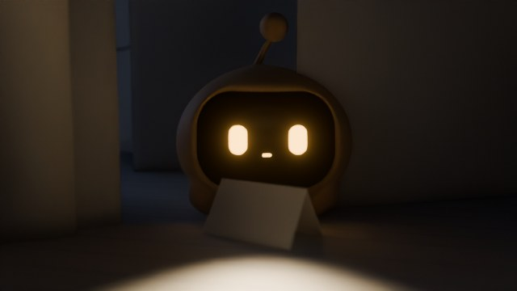
09 · nocheUna pregunta nueva
Scope ha plantado tu nota en el campo. La lámpara se apaga y él sigue con sus ojos.
plantar: clip nuevoPaleta y materiales 02-biblia.md §1
Entrega 2: el mundo vivo tras tu aprobación
Estos apartados del tablero quedan pendientes a propósito (§19 del brief). El storyboard ya los anticipa.
Notas honestas
- Los renders usan el modelo aprobado de Scope sin modificar, abierto en solo lectura desde
assets/scope-3d/blender/scope-master.blend. Solo se colocó y se posó con los canales declips.py: fotogramas de clips existentes o poses sostenidas dentro de los rangos de la capa Presence diseñada. - Las poses marcadas en rojo no existen como animación (detalle en
03-storyboard.md§2). Son imágenes fijas, no animación. - Luces auxiliares: un foco ámbar delante de la cara en las escenas nocturnas, que representa el alcance de sus ojos y no ilumina a Scope (light linking), y un rebote suave del papel.
- Sin GPU en este equipo: todo es Cycles por CPU en modo headless. No se ha probado nada de esto en tiempo real.
- La letra manuscrita de las hojas usa Ink Free (fuente del sistema, solo para el render). En producción haría falta una manuscrita con licencia web.
- Textos reales: preguntas de
notebook-content.ts, frases deabout-content.ts; proyectos deprojects-content.ts. No se ha inventado ningún dato sobre Álvaro. - Documentos: 01-concepto.md · 02-biblia.md · 03-storyboard.md · blender/pliego.py